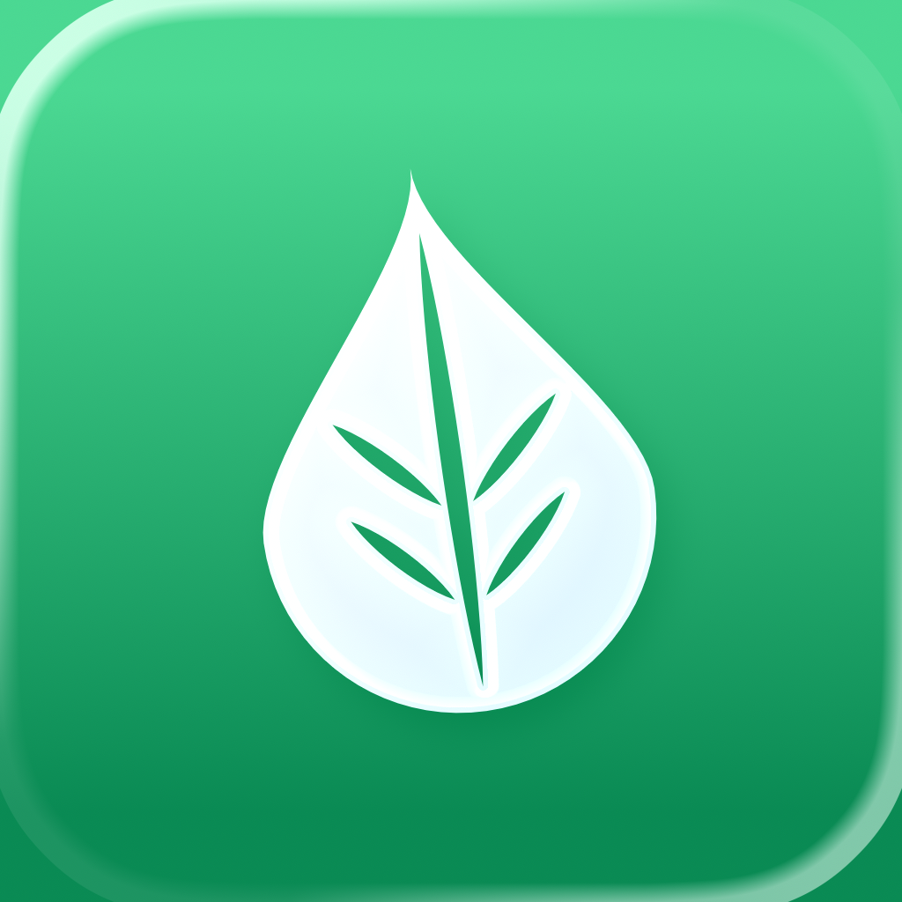
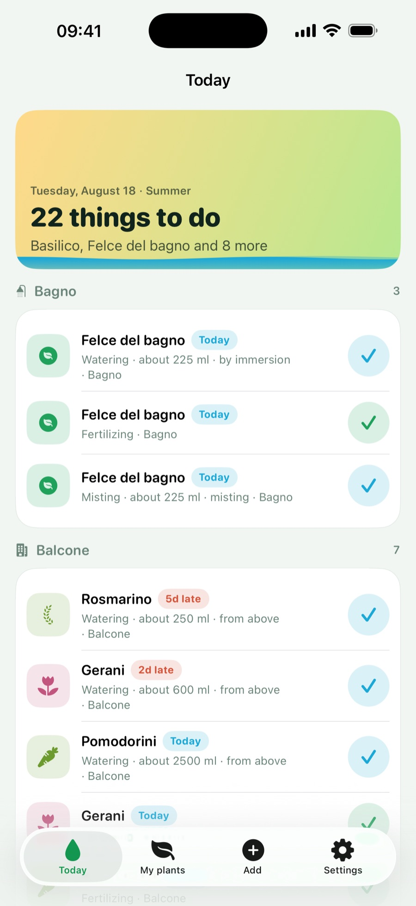
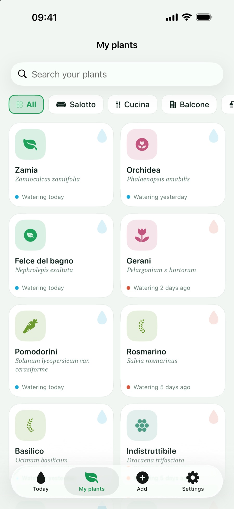
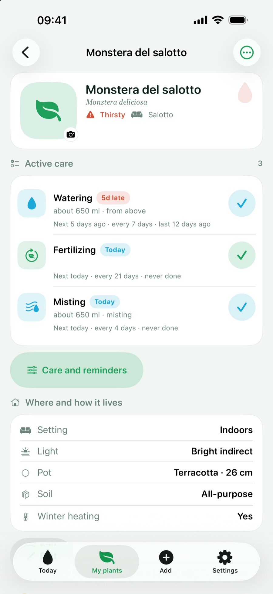
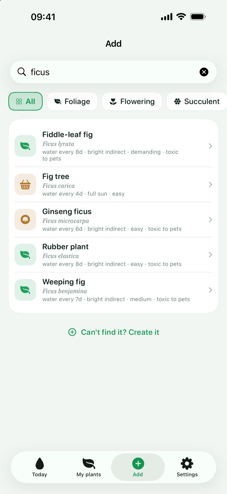
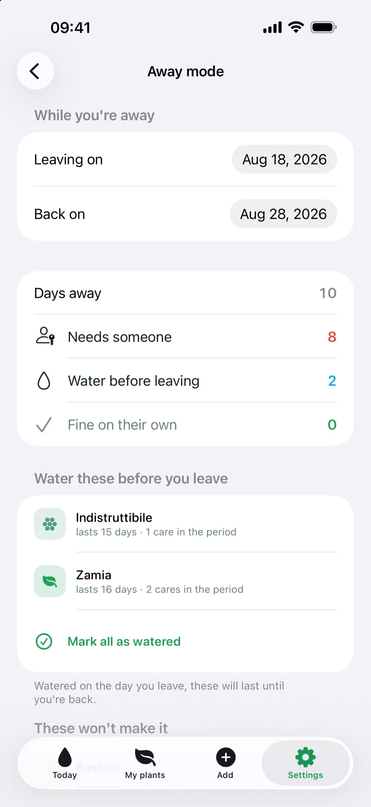
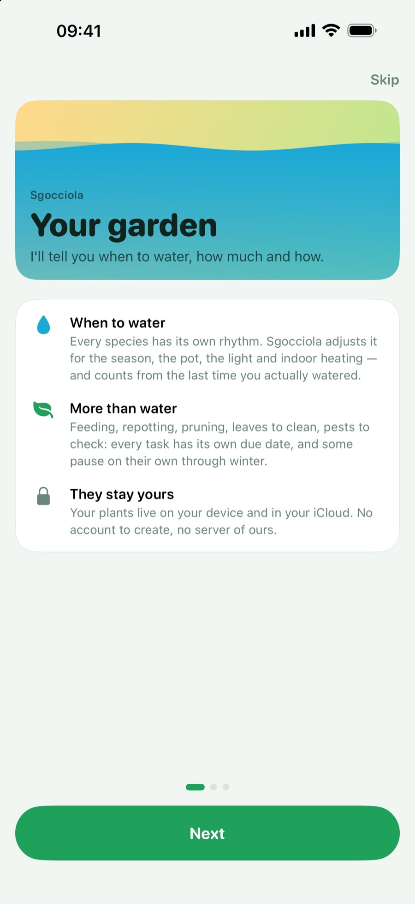
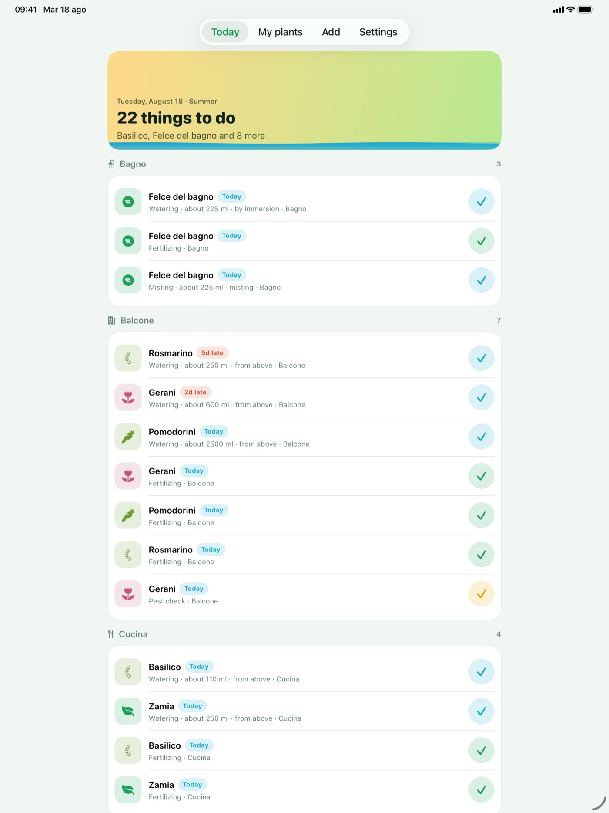
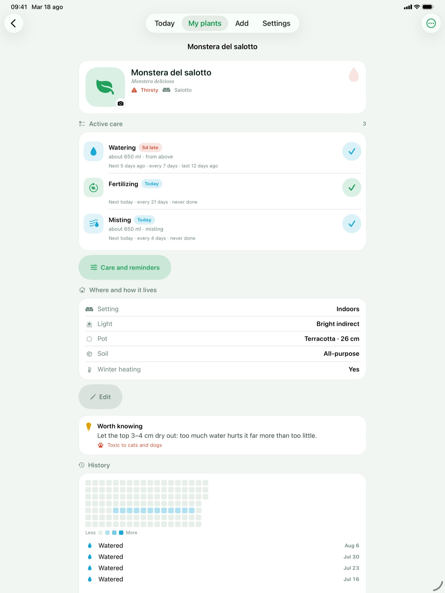

Materials for editors. Last updated: September 2026 (version 1.2).

Sgocciola tells you when to water your plants, how much water to give and how to give it — and along with the water, everything else a plant asks for and nobody remembers: fertilizer, repotting, pruning, rotating the pot, cleaning the leaves, pest checks, misting, seasonal moves, drainage.
It is not a reminder that repeats every seven days. The interval starts from the species, then gets corrected by what actually changes: the season, winter dormancy, the material and diameter of the pot, light exposure, the soil, the heating you have on indoors. A monstera in a terracotta pot by the window in February is not as thirsty as the same plant in July, and the app knows it.
On iPhone and iPad with iOS 27 and Apple Intelligence, the Add tab can take a photo of a plant you cannot name. Recognition runs on Apple's on-device model: the photo never leaves the phone. The app suggests and does not decide — it shows the candidate species and asks you to check; if the catalogue only knows the suggested genus, it opens a search on that genus instead of picking a species on your behalf.
No account, no developer server, no ads, no tracking, no third-party libraries. Plants live on the device and, if you want, sync between your own devices through your private iCloud. The App Store listing says “Data Not Collected”.
Dynamic Type at every size, VoiceOver and Reduce Motion supported throughout: wherever there is a swipe, there is always a visible button too.
Built entirely in SwiftUI, data in SwiftData synced to the private CloudKit database, WidgetKit, App Intents for Siri and Shortcuts, actionable local notifications, Foundation Models for photo recognition on iOS 27. No third-party dependencies.








Need full-resolution images or anything else? Just write to donbreda4@gmail.com.
© 2026 Giulia Giancaterino
{kind=link}